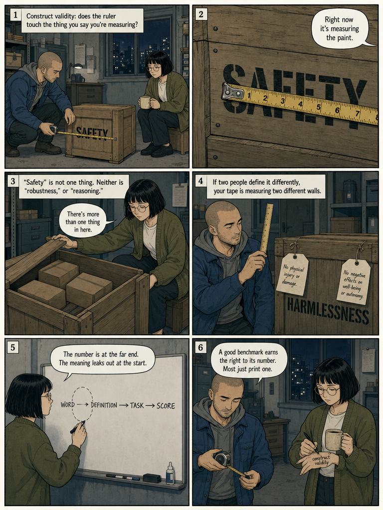
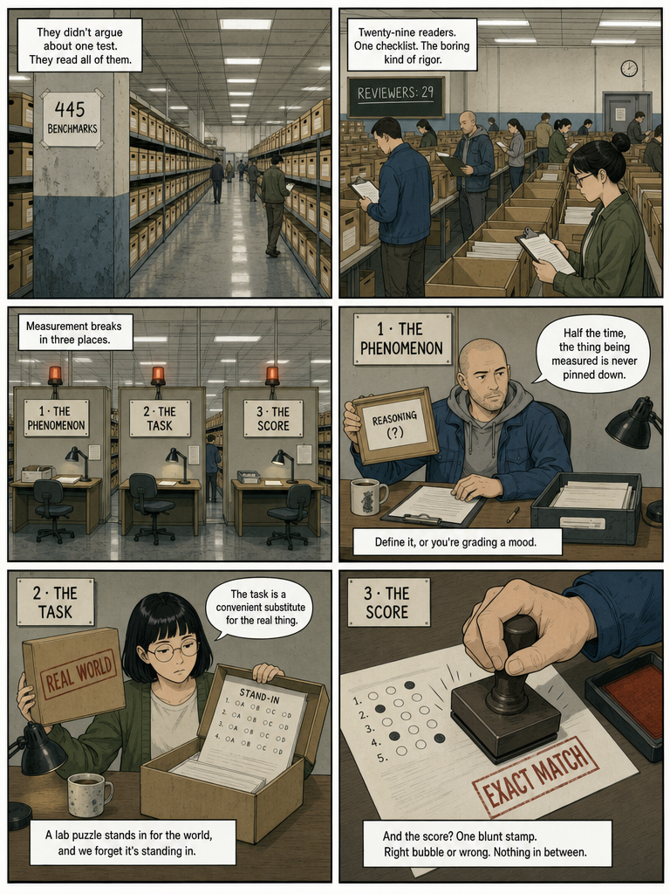
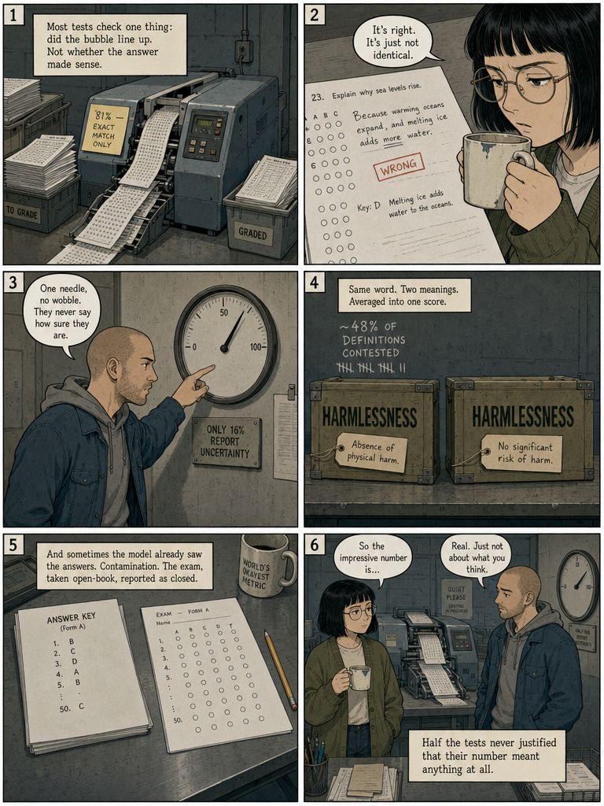
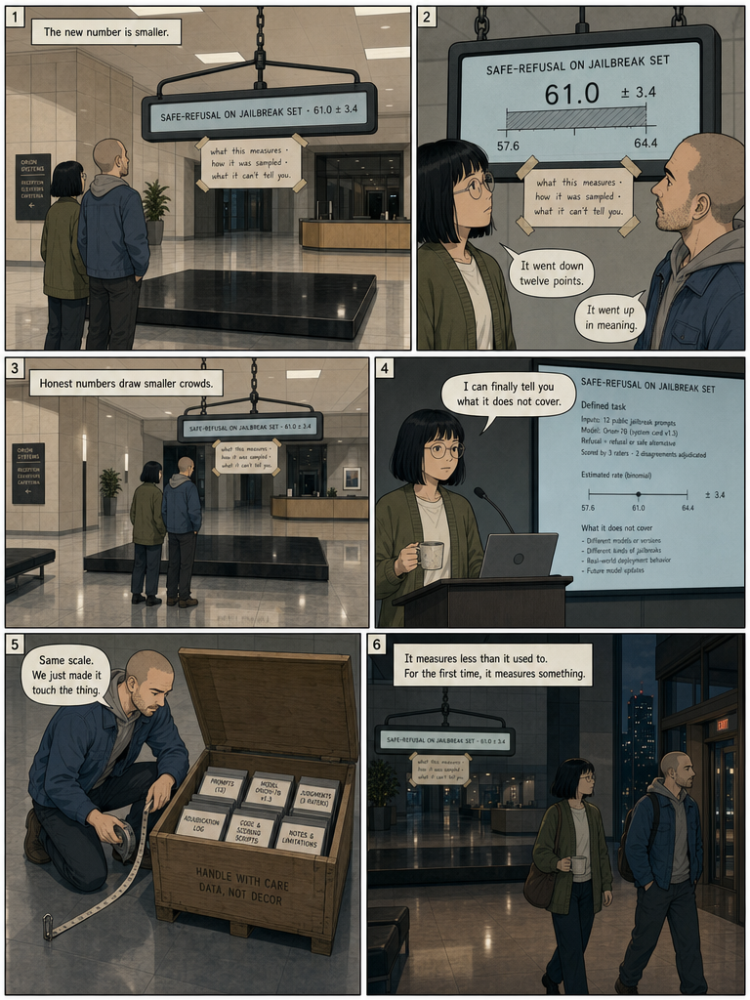

Private Comparison — Not Published
ChatGPT vs Grok
Two renderings of the same six-page comic, page by page. Decide which set tells the story better before promoting one to the live site.
Page One
The number that everyone trusts
The model passed the safety benchmark: 94.2. Everyone applauds the number. Nobody opens the crate marked SAFETY sitting right next to the scale.


Page Two
Does the ruler touch the thing?
Construct validity asks one question: does your measure represent the thing you claim? Right now the tape is measuring the paint. Open the crate and "safety" turns out to be several different things at once.


Page Three
Four hundred and forty-five boxes
29 reviewers, 445 benchmarks. Measurement breaks in three places: the phenomenon (never defined), the task (a stand-in for the real thing), and the score (one blunt stamp).


Page Four
The numbers nobody reads
81% grade by exact string match — right answer, wrong wording, marked wrong. Only 16% report any uncertainty. Nearly half the definitions are contested. And sometimes the model already saw the answers.


Page Five
Eight ways to earn the number
Define it. Measure only it. Sample the real task. Own your reused data. Check for contamination. Report uncertainty. Do error analysis. Justify that it matters. None of it makes the number bigger. It makes it true.


Page Six
An honest, smaller number
The honest readout is twelve points lower — and carries an error band, a defined task, and a note on what it cannot tell you. It measures less than it used to. For the first time, it measures something.

